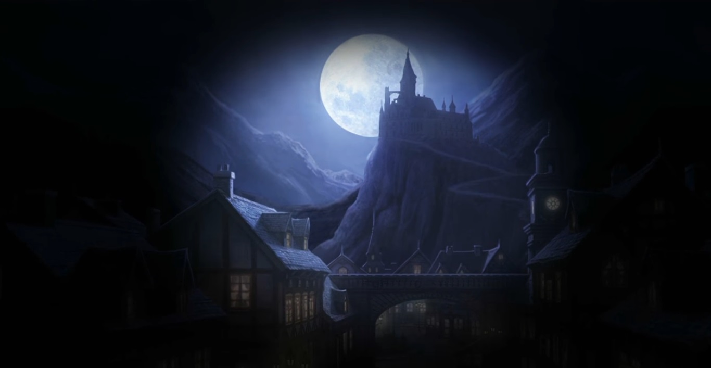
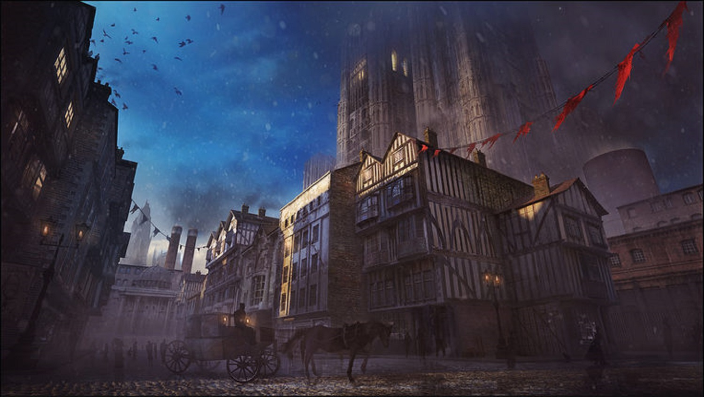
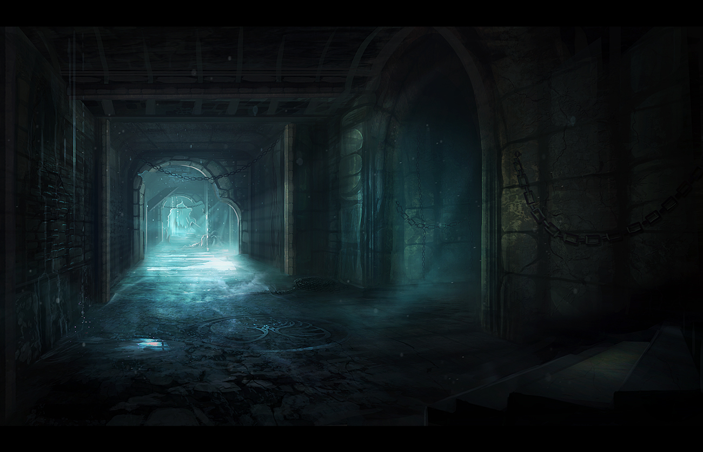
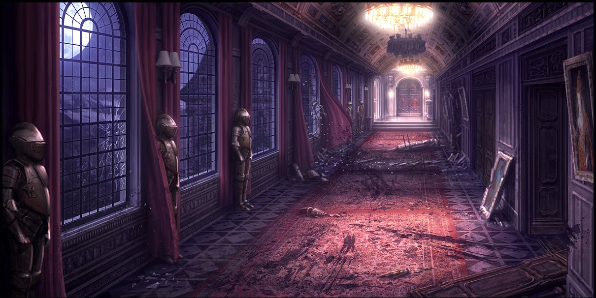

Mustafa Uğur Erkan Writer
Story

The Dark Night. 29/12/1893
- --Rusty Hearts--
-
...I have no idea. Where am i? Where is this place? I dont know. I dont even know.
A girl.. With spiky hair. She near to me. Handing me a sword.. She tries to speak. I cant hear her. Its.. To loud.. A scream. No.. Its more like yell.
A monster?! How! Too many rats.. I hate this place. There is 5..6 people around here.. We should get out of here. I can hear again.. Gunshots.. Magic.
How the world i end here? There is better question. How can these people use magic? We in some underground place for sure.
And after.. I close my eyes. Accept my fate. Im ready to die.
Sounds end. Spiky haired girl starts to talk again.
Girl A: "Hey! Wake up?! How long you gonna sleep? Mayor! Mayor!!" Am i mayor? How? I dont even know my name.
Boy A: "Just like i said. It is a bad idea after all?!"
Girl A: "...Mr. Mayor you should wake up. Or else we gonna stuck here!"
"...I.. I am a mayor..?"
Girl B: "Okay.. Mr.." She gets more close to me. Tryies to found my name.. She smiles and her voice get softer. Nicer.
Girl B(Open in new tab): "Now Mr.. Victor. I am Leila Vergenius. And i am a vampire.. Please dont scared. We here to protect you!"
This little girl carrying a big axe. How in the world? Its impossible for sure. Oh. I remember now. She is A VAMPIRE.. Our town gets scared by her most of times. But she is not that BADBut i slowly shake my head. Look to people.
"...Okay. Just like Leila said. Im Victor.. but can i get your.. Names?"
Girl A: "Well.. I can tell. Becouse you asked so gently! My name is Angela Strraughend!"
I heared that name.. Our town called her a witch. Tries to burn her twice. How can be she so nice?
Boy A: "And my name is Frantz Kruger. And no im not son of Freddy kruger if you ask. "
Oh. That guy.. He is a vampire too. I heared he lived like 1200 years? Well if we look at time we in 29 December 1893. I started to remind things.. Oh yeah. He looking his wife almost 5 years. What a mess..
Boy B: "Names Ian. Ian Wakamoto. No need for talk. Just move your body and lets go."
He was right. We need to go..
..Several ours later..
Monster.. Everywhere. Ian and Angela protects me.. But Frantz and Leila leading us. More like they clearing the way. I started to remind my name to. And my personality. My name is.. Alfred Victor Drevis. as it seems i am the mayor of this city. But you ask? How this monsters came? How we did end up here. Let me tell you..
It starts with 14. Century.. With that Rat Plugue. People call this.. Black Dead.. Or something like that. Several countrys get vounded. They die.. Slowly. Most of Europe falls. Roman empire.. Germans, French people. Austarians and more. Our kingdom more to Poland. With our king of course. They treat our people like animals! Like.. Some kind of slave. On this event. Ottoman Empire and Nordic countrys try to invade Europe. Europe falls.. Roman empire dies. Map be like this. Well.. With Roman empire and greeks dies. World starts to change. Even glory empires falls becouse of this plague. I. Beyazıt dies becouse of this Plague. Turks.. And Russians rule the world almost 200 years. But.. Plague take control of world. Even evolve! Humans becomes monsters. Animals becomes more creepy.. More angry. More thirsty. Even my dad too.. How cruel is this? A child kills his dad. Crush his skull.. My mom cant.. Handle it. She hang herself. What a cruel world. But here i am. Telling you to this cruel world, with several people. Well.. But in this sentuary we fight back! Humans.. Or some kind of monsters. We have to fight back. Or else.. We will lose only hope we got. Well.. You ask. Then there is no countrys in world. What are you guys doing? Where do you live? Well.. As for its old name we in center of the world. In ottoman teritory.. But there is not that much people left. Oh yeah.. And the "Americans." but we called them indies anyway.
And for another question.
I came here becouse of i need to clear some dungeons. Becouse some of the monsters taking food supplies. With people too.. I was killing the spiders. But it seems they almost killed me.
Angela: "Hey.. Mayor? Can you start to remember everything?"
"Y-Yeah.. Thank you."
Frantz: "Thank god.. Well. If we done here we should go to town. Or else they can attack again."
"Yes.. You right. Lets go."
We move toward to town. Slowly.. There is villagers and to many villages to. I smile a little bit. After remember this kind of horrible things.. Its kinda cure for me too. Well? What we waiting for. I go to my room. Open my door.. And a woman who so worried hugs me not even thing one.
Pamela:"OH MY GOD WHERE THE HELL ARE YOU BEEN?! I BEED WORRIEDSICK!"
"Pamela-- I can explain!-"
Pamela: "Do not! I... Dont do this again?!"
"..Okay. Dont worry."
Leila: "Tehee.. Someones wife getting angryy!"
"..! She is my sister!"
Leila: "I dont think she dont see you that wa--" Angela: She cover Leila mouth with her hands. And laugh's little while see covering it. "Ah! Kids! Pamela? Why dont you make some tea for us? That will be great!"
Leila: Tries to bit her fingers several times. But Angela wont give up yet."Hmphh!"
Pamela: "O-Okay.. Mrs Angela. Anyone want something?"
Ian: "I want beer."
Frantz: "Make it two."
"...Well make it three."
Pamela: "Okay.. I understand. Boys."
Ian: "What! We almost getting killed miss."
Frantz: "Oh shut up Ian. We always doing that stuff."
"Please?"
Pamela: "Okay okay! Dont get angry.." She slowly moves to kitchen.
Angela: "How can you be 62 years old Leila! You still act like a child! Dont say that kind of things when we near her!"
Leila: "Hmpf!" It seems. She is angry. Very angry. She crossed her arms like a child. And sit somewhere else. Away from us for sure..
"Hey! Leila if you come here i can give you a candy." I start to wave a lolipop in my hand.
Leila: "...." Its working. She cannot say no to candy.
"Well too sad.. I should give to Edgar then."
Leila: "..N-No! I want that!" She grabbed my hand and takes lolipop. And i started to pat her head.
"You guys need to rest. I think you should sleep. Or another things you want to?"
Frantz: "Even we want to.. Its impossible. We need to protect you."
"Huh? Why do you guys need to do that?"
Angela: "Eheh.. Do you remember why do you forget your memories..?"
"I dont think so?"
Angela: "I accidently cursed you. So.. For 24 hours. I need to be more close with you! Or else you will die..."
I started to clap. "...Oh my god. I am not even look like a monster?! Do i!?"
Ian: "Should be answer this question?"
Leila:"Shut up! Big meanie."
"I see. Okay.. You guys can stay at my home for today."
...Well. I changed my mind. We dont have any kind of hope. We are screwed. Well.. Full moon on the rise. But after i closed the diary. I need to tell something too. More of people..
Edgar Grosvenor:
Dont trust his look. He is a really.. Really strong wizard. Edgar is a male and his backstory is that he is a man trapped in a boy's body. He utilizes the same weapons as Angela.. His skills are exactly like Angela's. But his orginal powers is priceless.. Edgar's Master is Estel same as Angela.
Meilin Chen:
She has sky blue star-shaped pupils. She wears her hair in bunches with the remaining part brought back up in a loop. Her outfits are a white ankle-length cheongsam, a sky blue short-sleeved jacket, a sky blue fingerless glove on her right hand and a pair of sky blue shoes. She wields a claw or gauntlet on her left forearm. While standing idle, she keeps her left leg raised. she likes cats. No one knows exactly what brought this mysterious young lady all the way to Bramunez, nor do they dare ask her about the power that resides in her left arm. She's shy around the townsfolk but once she gets into Curtis Castle her fists and feet speak volumes. Her lightning fast techniques and the power of her mystic arm will ensure that Vlad's minions learn to fear the name Meilin. Well.. I should say. She is cute. Smart. And more stronger then me for sure. Tude Macloud: OH! Thats my man! He is like a brother for me. But.. As for his story.. A lifelong wanderer, Tude Macloud was attacked by a wolf in his travels. He managed to fend the beast off but not after it broke off one of its huge teeth inside his chest. Before long, Tude discovered that the wolf's bite and its tooth were having an effect on his body. His arm turned into a wicked claw that he keeps hidden within a bulky gauntlet. He was traveling from town to town to avoid arousing suspicion when he stumbled into Bramunez on a whim. In a serious case of wrong place at the wrong time, Tude was sealed within Curtis Castle when the Golden Seal team erected the barriers to trap Vlad inside. He joins up with Frantz and Angela once they enter the main levels of Curtis Castle
Natasha Borzenkova: (I cant show her look. Becouse.. Of "nudity.") Well. Ian's best friend for sure.. Her look is kinda more open body. She likes to wear skirts and shirts. Her belly opens and she carrys more than 5 guns and countless knifes with her. Her hair is Purple and eyes are blue... As for her story. Natasha is a con artist who travels from town to town with her sister, staging fake attacks from monsters and then swooping in to save the day. However, her stand at Castle Curtis is no con. The inhabitants killed her brother in cold blood, and she will not stop until vengeance is dealt. She is quite experienced in the art of sharpshooting and musketry.
Farewell, Victor Alfred Drevis.
{kind=link}
{kind=link}
{kind=link}
{kind=link}
{kind=link}
{kind=link}
{kind=link}
{kind=link}
Part 2

Every Nightmare Ends. 30/12/1893
- New day.. New life.
-
"Well.. What a night. I still have 12 hours to spend with Angela. This will be looong day.."
Angela: Her hair still look like a spike. But its effect of her magic. "Hey! LazyPeasy wake up?"
"What kind of word is that..?"
Angela: "Wake up! Pamela make awesome foods today. And you sleep with your suit? Oh my god."
"Normally. I dont.. But i fell asleep. Why do you care?"
Angela: "...You are such a hardwork Victor."
"These compliments are so nice to hear Angela."
Angela: "Shut up and go to kitchen! Lazybug!"
"Stop making new words!"
I slowly move to kitchen.. God, my body is dying. I cant lie about that. Well.. As we know i should be more like angry person. Like my dad but anger not even close to my personality.
Meilin: "Hey hey! Victor where you been?!"
"Dying."
Natasha: "Cute."
"...................I hate you." Leila: "Well! Even vampires can eat!" She starts to eat like crazy.
Pamela make food for Leila. Not for us.. Im pretty sure about that. But i like these mood. Jokes.. Or anything else is perfect. I feel like they are my family now. As we eat our food. More like.. Leila's food. We started to go training. Buuuut... Our little spiky haired girl cant leave me. Why? Becouse of damn curse.
Angela: "Ohoho! Our big boy is taking his guns.."
"Well. Im not a wizard maybe but i can still fight." I grabbed my guns. A revolver and my dagger. Yes.. I have powers too. But i cant control them. This is why i use normal guns.
Angela: "You can! You can control the time? You knew it right?"
She was right. I can control the time.. But only minutes. I never been try go back an hour or.. Another else. "Well.. Lets get this over with." I started to shot doll. And do more fast moves to cut the face. More faster. I need more speed.. Or else i will be useless. More.. And more. When i realised i cut every part of doll. "Okay... Huf.. Thats enough.."
Angela: Slowly clap her hands. "Good job! As a mayor and a fighter."
My day pass like this way. Training all along. I was starting to get boring. So i think going shop was a better idea. Joheim Galgart. that old man. Ho ho ho.. You cant see that face everytime.
"Oh look whos here? It isnt that our old general?"
Joheim: "Mr.Mayor. Looking still handsome. And deadly i see."
"You.. just compliment me."
Joheim: "Yes i do. Somethings wrong Mr.Mayor?"
"Who are you and what did you do to Joheim?!" Angela getting worring. For my actions..
Angela: "Victor..?"
Joheim: The old man starts to laugh. And hit my back with his strong hands. "Haha! You should look at your face weirdo."
"...."
Joheim:"Haha.." He slips his tear on his eye. Smirks at me.
"You son of a--"
Angela: "Haha! Ha- Can we get weapons please general?!"
Joheim: "Okay okay.. Ahem. I have new things for you two. Im pretty sure you liked it."
"Show us."
Joheim: He open his chest behind him. Show me a big dagger.. And a big revolver. Wait.. Is that..?! Its penetrade guns?! How!! Oh and a mage staff. Witch is i have no idea how these things work.
"I'll buy it. Now. What you want!"
Angela: "I CAN MAKE YOU CUPCAKES IF YOU GIVE ME THAT WEAPON."
Joheim: "Well, we in november. Its aaaalll free."
"I can kiss you."
Joheim: "I dont need it thanks."
Angela: "I can kiss you too.."
Joheim: "I can accep--"
"Dont even thing about it granpa."
We grabbed our guns. And ready to fight, but of course we need pass 12 hours.. So. We decited to move around. Moving several places we became a group. Drinking. Singing. I never been free before. I hope that day never ends. Fighting.. Is hard. As long we have fun. We ended up my house again. But..! Pamela is so angry this time, its not hard to see the reason tho.. But i grabbed her arms gently. Let her drink too..? I know you ask. Why we even drink? Becouse.. We dont need to think. Just live it. All these times.. Racisicm, Kingdoms, Queens kings ! Or whaatever you want to add. They ended up died. We are only people trying to fight. Make humans.. Live again. In there world. Not the monsters world.. Our world. The map.
"Well.. Ugh.. My head is dying again.."
Natasha: "Shut uuupp!! Our fun has just beguun!" And she fall asleep too.
"Okay.. You people should go sleep, whenever you want!"
I let them sleep at my home. Well, mostly they sleep on my floor. Some of them hugged me, some of them just slept whenever they found. Its kinda funny you know? Becouse i feel like im the big brother of them. Taking care of them. I feel safe around them. I hope they feel the same way too. Dear Diary, i wrote you becouse i dont trust myself. I can forgot things so easily. So.. Keep that good memories okay? You are my dear friend. Well.. Tommorow, we have to go dungeon.
Farewell, Victor Alfred Drevis.
{kind=link}
Part 3

Dungeon day. 31/12/1893
- ...
-
My body is quite dying tho.. I am pretty sure Angela curse has been vanished. So, i better go to kitchen.
...
Well, its seems i am not only one who is wake early.
"Leila? Its 04:00 AM."
Leila: "Oh.. Its nothing. I just, you know. Do some vampire stuff." She starts shaking. While she holding her teddy bear.
"..." As i look closely to her. I started to feel her fear, her aura is quite strong tho.. I dont know how to respond it.
Leila: "D-Dont worry! I just.. I dont know, how did i end up here?"
"Hey no worries! Dont think about it. We are here for you, i am here for you." I put my hand to Leila's hair while i look around. "Everything gonna be fine okay?"
Leila: "...Okay."
"Go to your bed, i will tell you a story."
Leila: She shakes her head gently. After when we go her bed, her lips starts to move. "You know.. I am almost 60 years old. Isnt that odd?"
"Hm? I dont think so."
Leila: "Even now.. I act like a child. I am sorry Victor.. I am useless.."
Her.. Voice starts to break. In our world, vampires quite like a tale or something like that. Our vampires didn't get burned by sun. Or needs blood, But they can still bite. They are blood benders. "You are not useless.. And you still Beatiful as well. Dont worry okay? And look at Edgar! He is 82 years old and he traped in a girly child body." I smiled a bit.
Edgar: "I HEARED THAT!"
"Oh-- I forgot you share same room with him."
Leila: She starts to laugh. It seems that worked? She give me a biiig nice huggy hug.
"Okay.. Get some rest okay?"
Leila: "...Okay!"
Several Hours Later.
Time 01:15PM. Me,Frantz,Ian and Edgar still waiting girls to dress up.
Ian: "For F sake, we are not going somewhere fancy. We going to fight! C'mon!"
Frantz: "Dont make them angry--" Well. Frantz was right when you make them angry. They started to throwing high heels at us.
"Have you guys heard about Tsundere?" I gently open my umberella, to protect myself. "No? You will see how it is works."
Ian: "Ow! That hurt--!"
Frantz: "Becouse of you idiot!"
Edgar: He was sleepy, he didnt care anything. He just near to me protecting himself from that deadly weapons.(High heels.)
Finally. Girls came out. They.. Didnt do anything? We wasted an hour.
Ian: "What the? Am I blind? Or you girls havent dressed up yet?"
Frantz: "Parfume."
Angela: "Hah! Why do you care? Frantz can understand us."
Natasha: Her deadly look with her sharp eyes pointed at Ian. "Ian, move."
Ian: "We wai--"
Natasha: A warning shot she pointed at his feet. "Move."
Ian: "Okay M'aam."
Time 03:13, Europe dungeon. "Okay.. We need to look around."
Natasha: "Me and Ian look around."
Leila: She grabbed Edgar's arms, and started to move.
Frantz: "Angela and I look around."
"Okay, it ended up Meilin and I look at around."
Meilin: "OOOOOOOOOOOOOkay."
Meilin and I look at the kingdom. My god.. There is still Roman and German flags everywhere. This place is a mess. When i slowly moving around. I collect some flags too. Well, everyguy have a hobby. So, thats mine hobby. Collecting coins.. And some classy stuff. In this dungeon there should be maids. Becouse it was cafeteria before it was get infected by Plugue. Have you heard about Plague Doctors? These are scary things. I used when i was 8. I still used it when we have to go Italy. Anyways.. While we move around we see a creature moving to us. This thing.. Is too big?!
"M-Meilin!"
Meilin: "Huh?"
When she realised.. The 'Thing.' was attacking me. I cant attack with anything else becouse i cant use my guns. So, Meilin Just scratch monster back. These things are look like a fly. Act like a fly, they drink blood, they need blood. When she Scratch this thing back. Everythink becomes to blood bath. The voice this thing make. ...Its hurting my ears. I threw that thing with my legs, And shot him from his mouth.
Meilin: "...T-That was close.. Are you okay Mr. Mayor?"
"You can call me Victor, you know right?"
Meilin: "Sorry.. V-Victor.."
"Anyways.. We better get moving."
We move forward. And forward.. And forward. We found a kingdom! "Wait Meilin, I should write this."
Just like i said, i started to open my Diary.
Dear Diary. We come to this far. We are middle of Europe, the place called.. Berlin? I dont know. But its center of Europe. If we can take back the Europe, Africa will be more easy. Now we in the Kingdom of Center. If we manage the defeat that Boss, Monsters should have to move to Italy and Africa. If i die, i'll will send it whatever thing they need to do.
Farewell, Victor Alfred Drevis.
Part 4

Kingdom Of Nowhere. 01/01/1894
- In the end, it just a dream.
-
We started to move around. This place is neat! Well, i have to say. This is more clean then my room.
Meilin eyes are shining. She grabbed my arms and start to act like a kid.
Meilin:"Hey hey! Can we make our home like this? Please? Pleaseee!!"
"We are not even couples..?"
Meilin: "What is couples? Isnt that game thing?"
"No..? Just like your mom and dad."
Meilin: "W-Wait.. O-OH! PERVERT!" She started blush so hard. "I-I am chinese you idiot! H-How can i know that meaning..?" "Like the way you talk English of course."
Meilin: "...Can we still, make this our home..?"
"Well.. If Pamela accepts the fact you live with us. Witout my wife or my girlfriend. Why not."
Meilin: "Okay! We fake it!"
"No. Im single like 28 years! Thank you Ma'am but im still open for girls."
Meilin: "Hmpf.. Okay, in the end. I'll be your girlfriend then."
"Oh my.. God." I faceplamed so hard. Even my head hurt! Anyways.. We better be moving.
We started to move, holding hands like new lovers. BECOUSE WE ARE NEW OKAY?! We found that Thing. We hide inside of tables. But Meilin was faster then me. So, i told her to found the other while i was here. I started to check my bullets, and my dagger. I have to damage that 'Thing.' so this will be more easy.
"New year.. New day, New life."
I moved so fast, Shot that thing. Throw knifes whatever i can. I know i cant do anything about it. I just try to penetrade his armor.
"Hey! Cmon, attack me!"
When he moves, thing fly in air. Its is too heavy for sure.. He just slapped me with his big hands. And i slammed in to wall.
"Ouch.. Okay, well. Plan B."
Like i said. I can use time, with my clock. I just back at the moment when he slapped me.
I dodge thing attack, Ah-- Damn it. I remember now... I forgot to use my Revolver.
So, i'll take my revolver instead of my pistol.
I just.. Shot 3 shots of with revolver. And that thing starts to bleed. The blood bath.. I saw.
"I should be more carefull.. Hey! Meilin? Angela!? Come on, you guys miss all the fun!"
Well, at this moment. I was littttlle.. Sadistic. I wont write this part.
"They.. Still wont there. Where are they?"
I started to move around, i get more and more scared at the time. The thing can happend to them.
"Hellooo? Is anyone there? Meilin? Leila? Ian?"
No one is responding.
...
...
...
I realised something. I never like to write Diarys, How can i start to write one? My other pages?
----------------------------------------------------------------------------
Page 4: No one is responding. I started to look around, to see maybe they in queens room. And they are, all dead. Becouse of first dungeon monster is here.
The thing.. I cant kill, at this moment.
I write this Diary, becouse i need to save them. I need to use my powers to back at time, I cant lose them.
Page 8: No one is responding. I started to look around, to see maybe they in queens room. And they are, all dead. Becouse of first dungeon monster is here.
The thing.. I cant kill, at this moment.
I write this Diary, becouse i need to save them. I need to use my powers to back at time, I cant lose them.
Page 12: No one is responding. I started to look around, to see maybe they in queens room. And they are, all dead. Becouse of first dungeon monster is here.
The thing.. I cant kill, at this moment.
I write this Diary, becouse i need to save them. I need to use my powers to back at time, I cant lose them.
Page 16: No one is responding. I started to look around, to see maybe they in queens room. And they are, all dead. Becouse of first dungeon monster is here.
The thing.. I cant kill, at this moment.
I write this Diary, becouse i need to save them. I need to use my powers to back at time, I cant lose them.
Page 20: No one is responding. I started to look around, to see maybe they in queens room. And they are, all dead. Becouse of first dungeon monster is here.
The thing.. I cant kill, at this moment.
I write this Diary, becouse i need to save them. I need to use my powers to back at time, I cant lose them.
...
...
...
Page 396: No one is responding. I started to look around, to see maybe they in queens room. And they are, all dead. Becouse of first dungeon monster is here.
The thing.. I cant kill, at this moment.
I write this Diary, becouse i need to save them. I need to use my powers to back at time, I cant lose them.
Its keep going.. Over and over again. How many times.. I tried to save them..? There is no way to save them? Why i am still writing? I have to find the way to save them. I will go back at time. I will try to kill this.. Monster.
Farewell, Victor Alfred Drevis.
{kind=link}